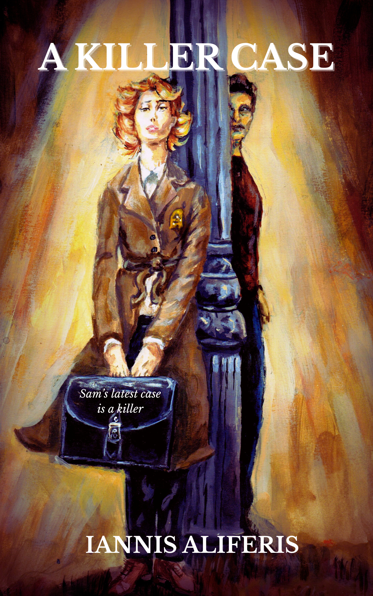

Delia Luna: Wolf Bitten
The first book in a planned six-book fantasy adventure series set in a Wild West cosmos where the paranormal is dangerously real.
View on AmazonA monthly invitation
Monthly Author Spotlight
November 2026 Featured Indie Author
Andrea writes female-centric fantasy erotica where danger, desire, and survival intertwine. Her stories are explicit, adventurous, humorous, and unapologetic.
The bite was only the beginning...
The first book in a planned six-book fantasy adventure series set in a Wild West cosmos where the paranormal is dangerously real.
View on AmazonAndrea writes female-centric fantasy erotica where danger, desire, and survival intertwine.
Her stories are explicit, adventurous, humorous, and unapologetic.
Delia Luna: Wolf Bitten is the first book in a planned six-book fantasy adventure series set in a Wild West cosmos where the paranormal is dangerously real.

Sam's latest case is a killer.
Step into the world of pulp noir, crime, mystery and romance with Samantha Rutledge. From award-winning screenwriter and filmmaker Iannis Aliferis comes a debut novel that brings cinematic storytelling to the written page.
Iannis Aliferis is a Greek-Australian novelist, award-winning screenwriter and filmmaker with a passion for pulp fiction, noir thrillers, horror and unconventional love stories.
Born in Sydney, Australia, he spent two decades in London, where he studied Creative Writing at Middlesex University and pursued his passion for storytelling through screenwriting and independent filmmaking, before relocating to Greece.
His debut novel, A Killer Case: A Samantha Rutledge Adventure, blends pulp noir, romance and crime thrills. The screenplay on which it is based was a Finalist at the Manhattan Film Festival.
His romantic dramedy screenplay Only Love Matters was produced by KQ Movies, released internationally on Apple TV, Fandango at Home and Amazon Prime Video, and screened at the UK Parliament.
His screenplays and films have received over 100 international accolades, including recognition from the Final Draft Big Break Screenwriting Contest, Shore Scripts and the London Film Awards.
On the publishing front, he contributed the short story Aerophobia and the short play Theatre of Crows to the art and fiction anthology A Guide to the Birds of the British Isles, published by Arcimboldi Press. He has also written stories for Phobos: Tales of Horror and Motel Medusa, collections of horror and pulp noir tales.
When not writing novels and screenplays or making films, he enjoys penning short stories and comic books. He also loves to eat and sleep and is a sucker for dark chocolate and honey.
He firmly believes that humankind was at its best during its thousands of years of hunting and gathering, although he suspects he wouldn't last two days alone in the wilderness.
Join me in welcoming Iannis Aliferis to our growing community of independent authors.
Support Indie Authors. Discover New Worlds. Keep Reading.
K. G. Rhodes

Featured Indie Author
Mark Schultz is an Ohio-based fiction author, husband, and father of two who spends his days working in commercial construction and much of his free time bringing stories to life.
A lifelong gamer, woodworker, and creative at heart, Mark has always enjoyed making things. His journey into writing began with the stories he shared with his children, eventually leading him to publish his first children's book. From there, his imagination took him in an entirely different direction.
His science fiction series, Syntherion, grew from a simple question about artificial intelligence, free will, and what really makes us human. What started as one story quickly became a much larger world with its own history, characters, and mysteries.
But Mark's imagination doesn't stop at science fiction. With a love for fantasy, adventure, and good storytelling in general, he has plenty of other worlds waiting to be explored.
Above all, Mark enjoys writing stories that give readers someone to root for, something to think about, and a reason to keep turning the pages.